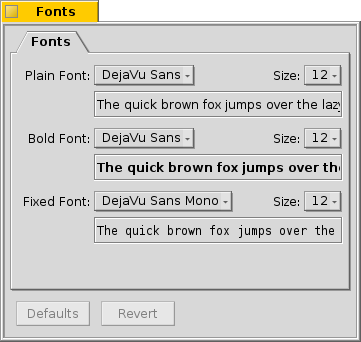

Haiku defines three standard fonts for different purposes. You set plain, bold and fixed font types and sizes that will be used throughout the system.
| Defaults | resets everything to default values. | |
| Revert | brings back the settings that were active when you started the Fonts preferences. |
Installing new fonts
You install new fonts by copying them into their respective user folder, i.e. /boot/common/fonts/ or /boot/home/config/fonts/ (see topic Filesystem layout).